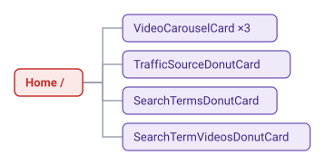
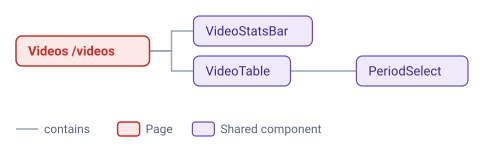
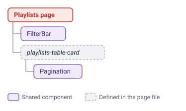
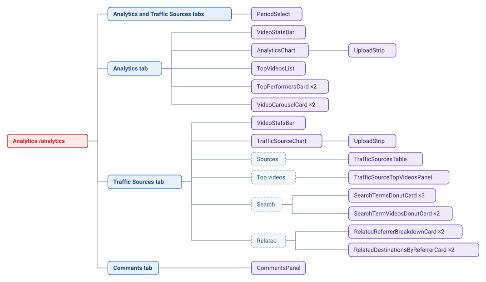
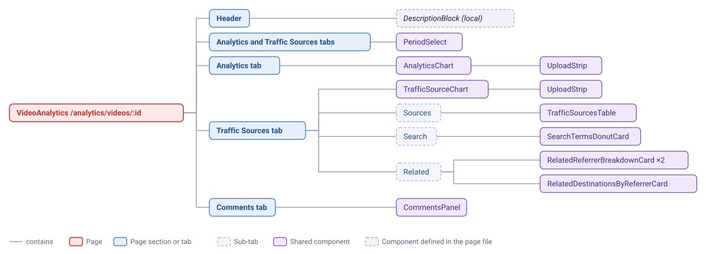
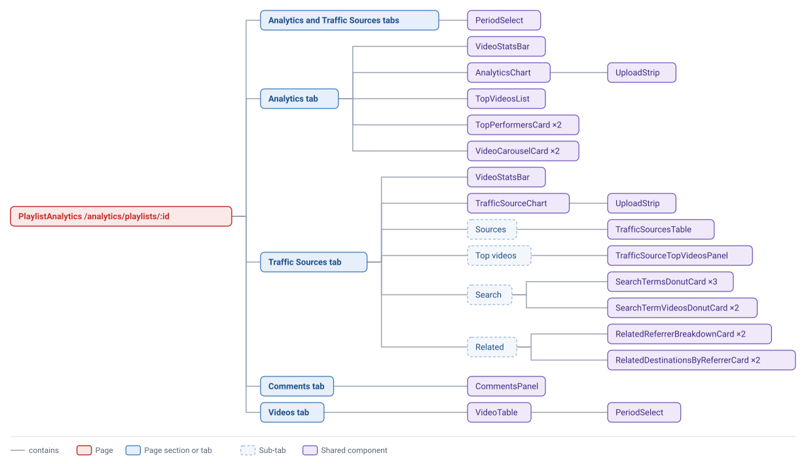
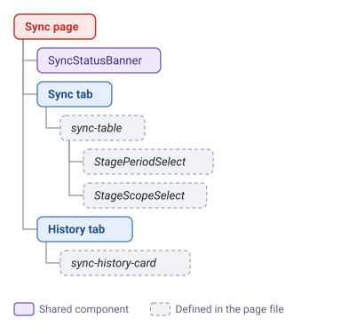

Frontend components
Which components each route renders, where every component is used, and unused components. Repeated code: Repeated code. Props and behavior: docs/references/frontend.md. Request timing: Requests.
Counting rules
Direct render sites
JSX elements <ComponentName …> written in source, per file. A .map() or tab-conditional render counts once per element, not per runtime render.
Distinct pages
Route pages whose tree includes the component, directly or through another component. TopNav and SyncStatus render outside Routes, so they count for all seven.
Shared vs file-local
Shared components live in frontend/src/components/. File-local ones are functions defined and used inside one file.
Routes and pages
App.tsx renders TopNav above Routes inside one BrowserRouter.
| Path | Page | Tabs (URL tab) |
|---|---|---|
/ | Home | — |
/videos | Videos | — |
/playlists | Playlists | — |
/analytics | Analytics | analytics, traffic-sources (sub-tabs sources, top-videos, search, related), comments |
/analytics/videos/:id | VideoAnalytics | analytics, traffic-sources (sub-tabs sources, search, related), comments |
/analytics/playlists/:id | PlaylistAnalytics | analytics, traffic-sources (same four sub-tabs as Analytics), comments, videos |
/sync | Sync | sync, history |
Components
Every shared component in frontend/src/components/, grouped by what it's for. General-purpose pieces come first, then the ones built for a particular kind of data.
General purpose
Building blocks used across the app.
AsyncCard
The frame most data cards sit in. It shows a loading indicator, an error message or an empty message until the card's data arrives, and keeps the card in place while it reloads.
TopNav
The bar across the top of every page: links to each section, a back button on video and playlist pages, and the sync status.
SyncStatus
Shows a running sync's progress, or a failed stage, inside the top bar.
PeriodSelect
The Period dropdown: a custom range, the last 28, 90 or 365 days, or a single year.
Video lists and stats
Show videos and their numbers.
VideoStatsBar
The stats bar at the top of a page. It counts videos and Shorts published before the period (legacy) and during it (new), with their views and earnings for the period, plus comment totals and how many videos are public, private or unlisted.
VideoTable
The video list with its own filter bar, sortable columns and paging.
VideoCarouselCard
A card that pages through a row of videos with thumbnails, such as Latest Uploads.
TopVideosList
The Top Videos table on the Analytics tab. It can be ranked by watch time or views and shows each video's upload date and earnings.
TopPerformersCard
A short list of the top videos or Shorts from the last 7 days, in the Analytics sidebar.
Charts
Show metrics over time.
AnalyticsChart
The main chart. It plots views, watch time or earnings over time, split into videos and Shorts, per period or as a running total, in daily, weekly or monthly steps.
TrafficSourceChart
The same kind of chart, split by traffic source instead of video type.
UploadStrip
The row of markers under both charts showing when videos were uploaded. Opening a marker lists the videos.
Traffic sources
Show where views came from.
TrafficSourcesTable
A table of traffic sources with views, watch hours and each source's share.
TrafficSourceTopVideosPanel
For each traffic source, the videos that got the most views from it.
TrafficSourceDonutCard
A donut chart of the share of views from each traffic source.
Search insights
Show which YouTube searches found the videos.
SearchTermsDonutCard
A donut chart of the top search terms and their share of views.
SearchTermVideosDonutCard
Pick a search term from its dropdown to see, as a donut chart, which videos it led viewers to.
Related videos
Show which videos send viewers to each other through YouTube's Related Videos.
RelatedReferrerBreakdownCard
A ranked list of the videos that sent viewers here, with each one's share. Pages show two side by side: one for this channel's own videos and one for other channels.
RelatedDestinationsByReferrerCard
Pick a referring video to see which of this channel's videos it sent viewers to. On the video page it has no dropdown and shows where that video sends viewers.
Comments
CommentsPanel
The whole Comments tab: its own filters, the comment feed grouped by video, and paging.
Sync
SyncStatusBanner
The strip at the top of the Sync page with one small card per stage that is running, has failed or has just finished.
Not used
These exist but no page renders them.
NavBar
A back button.
VideoListItem
A single video row with thumbnail, date, type and views.
Components on each page
The components each page renders, laid out by tab. TopNav and its SyncStatus sit above every page, and AsyncCard frames almost every card, so neither is repeated below.
Red is the page, blue boxes are tabs, dashed blue boxes are sub-tabs, purple boxes are components (a component's own children branch off to its right), and dashed grey boxes are components defined inside the page file itself.
/
/videos
/playlistsThe playlist table and its paging are written directly in the page, inside one AsyncCard.

/analytics
/analytics/videos/:id
/analytics/playlists/:id
/syncThe stage table on the Sync tab and the history table are written directly in the page.

Shared hooks and helpers
| Hook or helper | Used by |
|---|---|
useReplaceSearchParams | Videos, Playlists, Analytics, VideoAnalytics, PlaylistAnalytics, Sync, CommentsPanel |
useDebouncedInput | Playlists, Analytics, PlaylistAnalytics, VideoTable |
useDebouncedFields | CommentsPanel |
useReconciledSelection | Analytics, PlaylistAnalytics |
track / pending (lib/requestState.ts) | Home, Videos, Playlists, Analytics, VideoAnalytics, PlaylistAnalytics |
toTopVideoShape, last7Dates (lib/topVideos.ts) | Analytics, PlaylistAnalytics |
last28Dates (components/PeriodSelect.tsx) | Analytics, VideoAnalytics, PlaylistAnalytics |
Observations
Observations only; none prescribes a refactor. Repeated code across pages and components: Repeated code.
Unused components
NavBar and VideoListItem are never rendered.